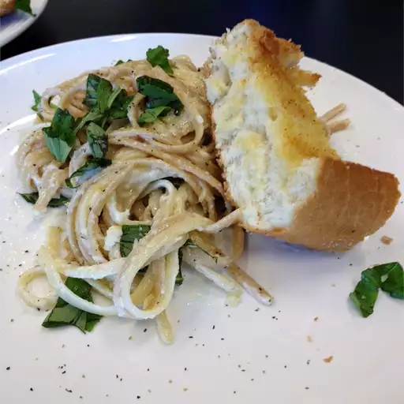

Chicken Alfredo Recipe

Description
This recipe features the great taste of Alfredo sauce with ricotta cheese in it. Hope you enjoy!
Ingredients
- 1 pound of fettuccini pasta
- 1 1/2 cups butter, divided
- 1 pound skinless, boneless chicken breast halves - cut into cubes
- 2 (16 ounces) containers whole milk ricotta cheese
- 1 pint heavy cream
- 1 teaspoon salt
- 1 cup grated Parmesan cheese
Steps
- Bring a large pot of sightly salted water to a boil. Add fettuccini and cook for 8 to 10 minutes or until
al dente; drain
- Melt 2 tablespoons of butter in a large skillet over medium heat. Saute chicken until no longer pink and
juices run clear
- In a large saucepan coombine ricotta cheese, cream, salt, Parmesan cheese and remaining butter. Cook over
medium heat until well combined, about 10 minutes. Sti in cooked fettuccini and chicken; cook until heated
through.
Back to recipes